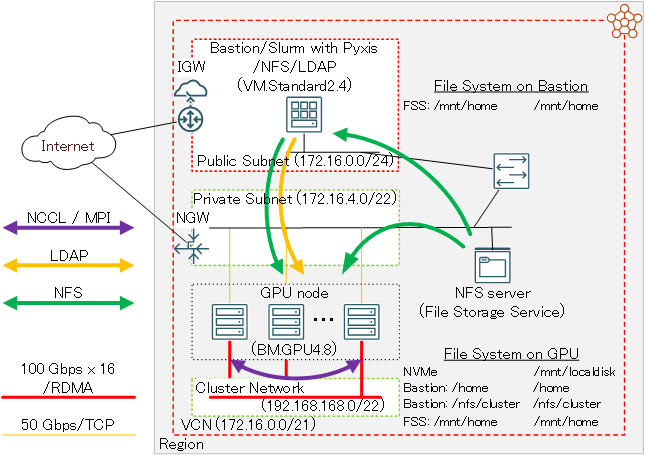
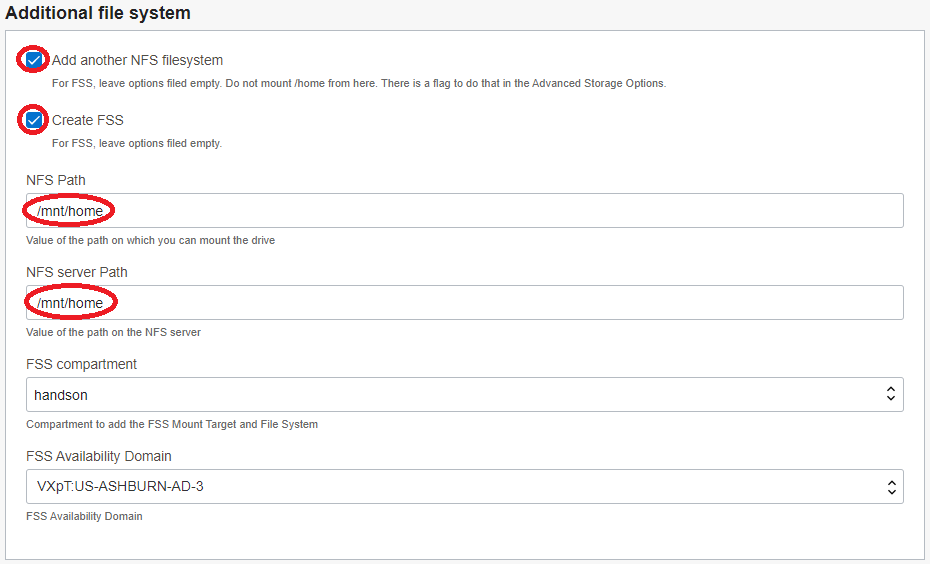
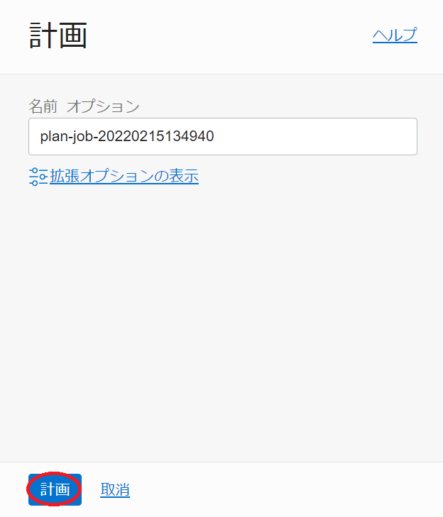

Oracle Cloud Infrastructure（以降OCIと記載）は、以下のサービスを提供することから、1ノードには搭載しきれない多数のGPUを必要とする大規模なAIや機械学習のワークロードを実行する、GPUクラスタを構築するには最適なクラウドサービスです。
- RoCE v2 採用の高帯域・低レイテンシRDMAインターコネクトの クラスタ・ネットワーク
- 8枚の NVIDIA A100 40/80 GBと総帯域幅1.6 Tbps（100 Gbps x 16）のRDMA対応ネットワークインタフェースを搭載するベアメタルGPUシェイプ BM.GPU4.8/BM.GPU.GM4.8
このチュートリアルは、 マーケットプレイス から無償で利用可能な HPCクラスタスタック を利用し、以下構成のGPUクラスタを構築、複数ノードに跨るGPU間の通信性能を NCCL（NVIDIA Collective Communication Library） の通信性能計測プログラム（ NCCL Tests ）で検証後、分散機械学習のサンプルプログラムを実行します。
- NVIDIA A100 40 GBを8枚搭載するGPUノード（ BM.GPU4.8 ）
- インターコネクト: クラスタ・ネットワーク （ノード当たり100 Gbps x 16）
- インターネットからSSH接続可能なBastionノード
- OS: Oracle Linux 7.9
- コンテナランタイム: Enroot
- ジョブスケジューラ: Slurm + Pyxis
- ファイルストレージ によるGPUクラスタ内ホームディレクトリ共有
- LDAPによるクラスタ内ユーザ統合管理

ここで構築するGPUクラスタ上のワークロード実行環境は、機械学習環境のデファクトスタンダードであるDokcerコンテナを利用し、ジョブスケジューラにジョブを投入することで行います。投入されたジョブは、ジョブスケジューラが起動するジョブ指定のコンテナ上で実行され、ジョブ終了後にジョブスケジューラがこのコンテナを終了します。
この実行環境は、コンテナランタイムに Enroot 、ジョブスケジューラに Slurm を採用し、コンテナの操作（インポート・起動・終了等）をジョブスケジューラからコンテナランタイムに指示することを可能にするため、 Slurm のプラグインである Pyxis を使用します。
またこの実行環境は、コンテナ環境からGPUやNICをRDMAで利用可能とする NVIDIA Container Toolkit を含むソフトウェア群もインストールされるため、ノードを跨ぐGPU間通信を高帯域・低遅延にコンテナ上から実行することが可能です。この通信性能詳細は、 6-0. NCCL通信性能検証 を参照ください。

また、本チュートリアルで使用する HPCクラスタスタック は、通常であれば数日かかるようなGPUクラスタ構築作業を、OCIコンソールのGUIから10項目程度のメニューを選択した後、1クリックで自動的に行います。
このチュートリアルで作成する環境は、前述のとおり Slurm と Enroot を使用するコンテナ環境ですが、これらの必要なソフトウェア環境は自身で整備するのでそれらを構築する際の基礎インフラストラクチャとなるGPUクラスタを構築する場合は、本チュートリアルの姉妹編である GPUクラスタを構築する（基礎インフラ手動構築編） を参照ください。
所要時間 : 約1時間
前提条件 : HPCクラスタを収容するコンパートメント(ルート・コンパートメントでもOKです)の作成と、このコンパートメントに対する必要なリソース管理権限がユーザーに付与されていること。具体的には、以下ページの Policies to deploy the stack: に記載のポリシーが付与されていること。
https://cloud.oracle.com/marketplace/application/67628143/usageInformation
注意 : チュートリアル内の画面ショットについては、OCIの現在のコンソール画面と異なっている場合があります。また使用するGPUクラスタ構築用スタックのバージョンが異なる場合も、チュートリアル内の画面ショットが異なる場合があります。
0. HPCクラスタスタックの概要
本チュートリアルで使用する HPCクラスタスタック は、クラスタ構築を大きく2つのステップに分けて実行しており、前半は リソース・マネージャ を使用したOCIリソース構築フェーズで、後半は リソース・マネージャ から起動される Ansible が行うOSレベルのカスタマイズフェーズです。
具体的には、以下のような処理が行われます。
［ リソース・マネージャ によるOCIリソース構築フェーズ］
- VCNと関連するネットワークリソース構築
- クラスタ・ネットワーク と関連リソース構築
- Bastionノードインスタンス構築
- GPUノードインスタンス構築
- ファイルストレージ 構築
- Ansible 関連ソフトウェアインストール
[ Ansible によるOSレベルカスタマイズフェーズ]
- firewalld停止
- NVMe SSD ローカルディスク領域ファイルシステム構築
- /etc/hostsファイル生成
- NFSファイル共有環境構築
- LDAPユーザ統合環境構築
- RDMAインタフェース構築
- Enroot 環境構築
- Slurm 環境構築
1. スタックの作成
リソース・マネージャ でリソースをデプロイする場合、まずそのための スタック を作成する必要があります。
本章は、 HPCクラスタスタック を元に、前述のGPUクラスタ環境を構築するための スタック を作成します。このチュートリアルで使用する HPCクラスタスタック は、バージョン 2.10.2.1 です。
-
以下 マーケットプレイス の HPCクラスタスタック ページにアクセスします。
-
OCIコンソールへのログイン画面が表示された場合（まだログインしていない場合）、ログインを完了します。
-
表示される以下画面の右上で、 スタック をデプロイするリージョンを選択し、 HPCクラスタスタック の バージョン を確認後、 コンパートメント を スタック をデプロイするコンパートメントに指定、使用許諾 チェックボックスをチェックし、 スタックの起動 ボタンをクリックします。
- 表示される以下 スタック情報 画面で、以下の情報を入力し、下部の 次 ボタンをクリックします。
- 名前 : スタック に付与する名前（任意）
- 説明 : スタック に付与する説明（任意）

-
表示される 変数の構成 画面で、各画面フィールドに以下の情報を入力し、下部の 次 ボタンをクリックします。なお、ここに記載のないフィールドは、デフォルトのままとします。
5.1 Cluster configuration フィールド
- Public SSH key : （bastionにログインする際使用するSSH秘密鍵に対応する公開鍵）
- 公開鍵ファイルのアップロード（ SSHキー・ファイルの選択 ）と公開鍵のフィールドへの貼り付け（ SSHキーの貼付け ）が選択可能

5.2 Headnode options フィールド
- Availability Domain : （BastionノードをデプロイするAD）
5.3 Compute node options フィールド
- Availability Domain : （GPUノードをデプロイする可用性ドメイン）
- Shape of the Compute Nodes : BM.GPU4.8 （GPUノードに使用するシェイプ）
- Initial cluster size : 2（GPUノードのノード数、デフォルトのまま）
- Size of the boot volume in GB : 200（GPUノードのブート・ボリュームサイズ）
- Image version : GPU（GPUノードのイメージ）

5.4 Additional file system フィールド
- Add another NFS filesystem : チェック
- Create FSS : チェック
- NFS Path : /mnt/home（※3）
- NFS server Path : /mnt/home（※3）
※3：ここで指定するパスは、 ファイルストレージ 領域に作成するLDAPユーザのホームディレクトリを格納するディレクトリを指定しています。よって、ユーザ名user1のLDAPユーザのホームディレクトリは、/mnt/home/user1となります。

5.5 Advanced storage options フィールド
- Show advanced storage options : チェック
-
Shared NFS scratch space from NVME or Block volume : チェックオフ
- 計算ノードの NVMe SSDローカル ディスク領域をNFS共有するかの指定（本チュートリアルでは共有しない）

5.6 Software フィールド
- Install Nvidia Pyxis plugin for Slurm : チェック
- Install Nvidia Enroot for containerized GPU workloads : チェック

- Public SSH key : （bastionにログインする際使用するSSH秘密鍵に対応する公開鍵）
-
表示される 確認 画面で、これまでの設定項目が意図したものになっているかを確認し、以下 作成されたスタックで適用を実行しますか。 フィールドの 適用の実行 をチェックオフし、下部の 作成 ボタンをクリックします。

ここで 適用の実行 をチェックした場合、 作成 ボタンのクリックと同時に スタック の適用が開始され、GPUクラスタのデプロイが始まりますが、このチュートリアルでは スタック の計画を実行してから適用を行います。
これで、以下画面のとおりGPUクラスタ構築用の スタック が作成されました。

2. スタックの計画
本章は、完成した リソース・マネージャ の スタック を計画し、どのようなリソースがデプロイされるか確認します。
-
作成した スタック の以下 スタックの詳細 画面で、 計画 ボタンをクリックします。

-
表示される以下 計画 サイドバーで、 計画 ボタンをクリックします。

-
表示される以下 ジョブの詳細 ウィンドウで、左上のステータスが 受入れ済 → 進行中 → 成功 と遷移すれば、 スタック の計画が終了しています。

表示される以下 ログ フィールドで、適用時にデプロイされるリソースを確認します。

3. スタックの適用
本章は、計画で作成されるリソースに問題が無いことを確認した スタック に対し、適用を行いGPUクラスタをデプロイします。
-
以下 スタックの詳細 画面で、 適用 ボタンをクリックします。

-
表示される以下 適用 サイドバーで、 適用 ボタンをクリックします。

-
表示される以下 ジョブ詳細 ウィンドウで、左上のステータスが 受入れ済 → 進行中 と遷移すれば、 スタック の適用が実施されています。

表示される以下 ログ フィールドで、リソースのデプロイ状況を確認します。
この適用が完了するまでの所要時間は、GPUノードのノード数が2ノードの場合で30分程度です。
ステータスが 成功 となれば、GPUクラスタのデプロイが完了しています。
4. GPUクラスタの確認・設定変更
本章は、デプロイされたGPUクラスタにログインして環境の確認を行うとともに、ジョブスケジューラの設定を一部変更します。
-
Bastionノードログイン
Bastionノードへのログインは、 スタック 適用時の以下 ログ フィールドの最後に表示されているBastionノードのIPアドレスを使用し、インターネットを介してopcユーザでSSHログインします。
このSSH接続では、スタックに指定したSSH公開鍵に対応する秘密鍵を使用します。
$ ssh -i path_to_ssh_secret_key opc@123.456.789.123 -
Bastionノードファイルシステム確認
Bastionノードは、以下のようにファイルストレージの/mnt/homeがマウントされています。この/mnt/homeは、GPUクラスタ内で共有するLDAPユーザのホームディレクトリに使用します。
$ df -h /mnt/home Filesystem Size Used Avail Use% Mounted on FSS_ip:/mnt/home 8.0E 0 8.0E 0% /mnt/home -
GPUノードログイン
GPUノードは、プライベートサブネットに接続されており、インターネット経由ログインすることが出来ないため、Bastionノードを経由してログインします。
GPUノードのホスト名は、Bastionノードの/etc/opt/oci-hpcディレクトリ以下のファイルに格納されており、hostfile.tcpとhostfile.rdmaがそれぞれプライベートサブネット接続と クラスタ・ネットワーク サブネット接続に使用するIPアドレスに対応するホスト名です。このため、BastionノードからGPUノードへのログインは、hostfile.tcpファイルに格納されているホスト名を使用し、opcユーザでSSHログインします。
$ cat /etc/opt/oci-hpc/hostfile.tcp compute-permanent-node-789 compute-permanent-node-844 $ ssh compute-permanent-node-844 -
GPUノードファイルシステム確認
GPUノードは、以下のように NVMe SSD ローカルディスク領域が/mnt/localdiskにマウントされています。
$ df -h /mnt/localdisk Filesystem Size Used Avail Use% Mounted on /dev/nvme0n1p1 6.2T 33M 6.2T 1% /mnt/localdiskまた、以下のようにBasionノードの/homeがGPUノードでマウントされています。この領域は、sudoコマンドを利用することで管理者権限を有するopcユーザに対して、ホームディレクトリをGPUクラスタ内で共有するために使用します。
$ df -h /home Filesystem Size Used Avail Use% Mounted on bastion_ip:/home 42G 13G 29G 32% /homeまた、以下のようにファイルストレージの/mnt/homeがマウントされています。この領域は、LDAPに作成する一般ユーザに対して、ホームディレクトリをGPUクラスタ内で共有するために使用します。
$ df -h /mnt/home Filesystem Size Used Avail Use% Mounted on FSS_ip:/mnt/home 8.0E 0 8.0E 0% /mnt/home -
Slurm 設定変更
Pxys を介して Slurm から Enroot 上のコンテナを利用する場合、デフォルトの挙動はジョブ終了後にインポートしたコンテナを削除します。
ジョブ終了後もコンテナを保持するため、Bastionノードで以下のように Slurm の設定ファイルを修正します。$ diff /etc/slurm/plugstack.conf_org /etc/slurm/plugstack.conf 1c1 < required /usr/local/lib/slurm/spank_pyxis.so --- > required /usr/local/lib/slurm/spank_pyxis.so container_scope=global次に、この設定変更を反映するため、Bastionノードのopcユーザで以下コマンドを実行し、 Slurm を再起動します。
$ for hname in `cat /etc/opt/oci-hpc/hostfile.tcp`; do echo $hname; ssh $hname "sudo systemctl stop slurmd"; done $ sudo systemctl restart slurmctld slurmdbd $ for hname in `cat /etc/opt/oci-hpc/hostfile.tcp`; do echo $hname; ssh $hname "sudo systemctl start slurmd"; done
5. LDAPユーザ作成
本章は、 HPCクラスタスタック が作成したGPUクラスタ内のLDAP統合ユーザ管理環境にLDAPユーザを作成し、このユーザでGPUクラスタにログイン後、 Slurm から起動するコンテナ上で簡単なコマンドが実行出来ることを確認します。
このLDAP統合ユーザ管理環境は、BastionノードがLDAPサーバ兼クライアントでGPUノードがLDAPクライアントです。
-
LDAPユーザ作成
LDAPサーバであるBastionノードは、ユーザ管理のためのclusterコマンドが用意されています。
このコマンドは、作成するユーザのホームディレクトリを/home以下に作成するため、本環境のLDAPユーザ用ホームディレクトリであるファイルストレージの/mnt/home以下に作成するよう修正する必要があります。このため、以下コマンドをbastionのopcユーザで実行します。
$ sudo sed -i 's/\/home\//\/mnt\/home\//g' /usr/bin/cluster次に、以下コマンドをBastionノードのopcユーザで実行し、イニシャルグループが privilege （グループIDが9876で、そのメンバーにコンテナ実行権限が付与される。）のLDAPユーザを作成します。
$ cluster user add user_name --gid 9876 Password: <- Password for user_name Repeat for confirmation: <- Password for user_name Full Name: full_name <- Full name for user_name $ id user_name uid=10001(user_name) gid=9876(privilege) groups=9876(privilege)ここで指定するパスワードは、GPUクラスタ内の認証にパスワード認証を使用しないため、任意のパスワードで構いません。
次に、このユーザがインターネットからBastionノードにSSHログインする際に使用するSSH秘密鍵に対応する公開鍵を登録するため、以下コマンドをBastionノードのopcユーザで実行します。
$ echo 'public_key_for_user_name' | sudo tee -a ~user_name/.ssh/authorized_keys public_key_for_user_name -
LDAPユーザログイン
先に作成したLDAPユーザを使用したインターネットを介したBastionノードへのログインは、以下コマンドでSSHログインします。
このSSH接続では、先のLDAPユーザ作成で指定したSSH公開鍵に対応する秘密鍵を使用します。
$ ssh -i path_to_ssh_secret_key_for_user_name user_name@123.456.789.123またこのユーザは、以下のようにGPUクラスタ内の全てのGPUノードにパスフレーズ無し鍵認証によるSSHログインが可能になっています。
$ cat /etc/opt/oci-hpc/hostfile.tcp compute-permanent-node-789 compute-permanent-node-844 $ ssh compute-permanent-node-789 -
コンテナ起動確認
BastionノードのLDAPユーザで以下コマンドを実行し、 Slurm から Enroot 上にコンテナを起動できることを確認します。
$ srun -N 2 --ntasks-per-node 1 --container-image=nvcr.io#nvidia/tensorflow:22.11-tf2-py3 --container-name=tensorflow bash -c "hostname; grep PRETTY /etc/os-release" pyxis: imported docker image: nvcr.io#nvidia/tensorflow:22.11-tf2-py3 pyxis: imported docker image: nvcr.io#nvidia/tensorflow:22.11-tf2-py3 compute-permanent-node-789 PRETTY_NAME="Ubuntu 20.04.5 LTS" compute-permanent-node-844 PRETTY_NAME="Ubuntu 20.04.5 LTS"ここで起動しているコンテナは、 NVIDIA GPU Cloud から TensorFlow のコンテナをインポート・起動し、その後起動したコンテナ内でhostname等のコマンドを実行していますが、このコンテナサイズが大きいため、コマンドの完了まで20分程度を要します。
但し、一度インポートが完了すると、次回以降はダウンロードしたコンテナイメージを再利用するため、同じコンテナを2回目以降起動する際は、短時間で完了します。
6. NCCL通信性能検証
6-0. 概要
本章は、 NCCL Tests を使用し、GPUクラスタ内の NCCL によるGPU間通信性能を確認します。
ここで使用する NCCL は、先の稼働確認で使用した TensorFlow のコンテナに予め含まれるものを使用し、 NCCL Tests はコンテナ内でソースコードからビルドします。
以上より、本章で実施する NCCL 通信性能検証は、以下の手順を経て行います。
- NCCL Tests ビルド
- NCCL Tests 実行
本チュートリアルは、2ノードに跨る全16枚の NVIDIA A100 GPU を使用した NCCL の All-Reduce 通信性能をコンテナ環境から計測し、以下性能が出ています。
- 帯域（busbw）：約 165 GB/s（メッセージサイズ10 GiB）
6-1. NCCL Testsビルド
本章は、コンテナ上で NCCL Tests プログラムをビルドします。
BastionノードのLDAPユーザで以下コマンドを実行し、 TensorFlow のコンテナ上で NCCL Tests をビルドします。ここで、ユーザのホームディレクトリに含まれるuser_nameは、自身の環境に合わせて修正します。
$ srun --container-name=tensorflow --container-mounts "/mnt/home/user_name:/mnt/home/user_name" bash -c "cd /mnt/home/user_name; git clone https://github.com/NVIDIA/nccl-tests.git; cd nccl-tests; make MPI=1 MPI_HOME=/usr/local/mpi CUDA_HOME=/usr/local/cuda NCCL_HOME=/usr/lib/x86_64-linux-gnu"
Cloning into 'nccl-tests'...
make -C src build BUILDDIR=/mnt/home/user_name/nccl-tests/build
make[1]: Entering directory '/mnt/home/user_name/nccl-tests/src'
Compiling timer.cc > /mnt/home/user_name/nccl-tests/build/timer.o
Compiling /mnt/home/user_name/nccl-tests/build/verifiable/verifiable.o
Compiling all_reduce.cu > /mnt/home/user_name/nccl-tests/build/all_reduce.o
Compiling common.cu > /mnt/home/user_name/nccl-tests/build/common.o
Linking /mnt/home/user_name/nccl-tests/build/all_reduce.o > /mnt/home/user_name/nccl-tests/build/all_reduce_perf
Compiling all_gather.cu > /mnt/home/user_name/nccl-tests/build/all_gather.o
Linking /mnt/home/user_name/nccl-tests/build/all_gather.o > /mnt/home/user_name/nccl-tests/build/all_gather_perf
Compiling broadcast.cu > /mnt/home/user_name/nccl-tests/build/broadcast.o
Linking /mnt/home/user_name/nccl-tests/build/broadcast.o > /mnt/home/user_name/nccl-tests/build/broadcast_perf
Compiling reduce_scatter.cu > /mnt/home/user_name/nccl-tests/build/reduce_scatter.o
Linking /mnt/home/user_name/nccl-tests/build/reduce_scatter.o > /mnt/home/user_name/nccl-tests/build/reduce_scatter_perf
Compiling reduce.cu > /mnt/home/user_name/nccl-tests/build/reduce.o
Linking /mnt/home/user_name/nccl-tests/build/reduce.o > /mnt/home/user_name/nccl-tests/build/reduce_perf
Compiling alltoall.cu > /mnt/home/user_name/nccl-tests/build/alltoall.o
Linking /mnt/home/user_name/nccl-tests/build/alltoall.o > /mnt/home/user_name/nccl-tests/build/alltoall_perf
Compiling scatter.cu > /mnt/home/user_name/nccl-tests/build/scatter.o
Linking /mnt/home/user_name/nccl-tests/build/scatter.o > /mnt/home/user_name/nccl-tests/build/scatter_perf
Compiling gather.cu > /mnt/home/user_name/nccl-tests/build/gather.o
Linking /mnt/home/user_name/nccl-tests/build/gather.o > /mnt/home/user_name/nccl-tests/build/gather_perf
Compiling sendrecv.cu > /mnt/home/user_name/nccl-tests/build/sendrecv.o
Linking /mnt/home/user_name/nccl-tests/build/sendrecv.o > /mnt/home/user_name/nccl-tests/build/sendrecv_perf
Compiling hypercube.cu > /mnt/home/user_name/nccl-tests/build/hypercube.o
Linking /mnt/home/user_name/nccl-tests/build/hypercube.o > /mnt/home/user_name/nccl-tests/build/hypercube_perf
make[1]: Leaving directory '/mnt/home/user_name/nccl-tests/src'
ここでは、先のコンテナ稼働確認で使用した TensorFlow のコンテナを起動する際、GPUノードのLDAPユーザuser_nameのホームディレクトリをコンテナにマウントし、その直下に NCCL Tests のソースツリーをクローンしてビルドを行っています。
これにより、ビルドした NCCL Tests のバイナリがGPUノードのファイルシステムに保存され、以降のコンテナ起動時にも永続的にアクセスできるようになります。
6-2. NCCL Tests実行
本章は、 NCCL Tests を実行します。
BastionノードのLDAPユーザで以下コマンドを実行し、ジョブスケジューラが割当てた1ノードのGPUノード上で TensorFlow のコンテナを起動し、このコンテナ上で8枚のGPUを使用した NCCL の All-Reduce 通信性能を計測します。ここで、ユーザのホームディレクトリに含まれるuser_nameは、自身の環境に合わせて修正します。
$ srun --container-name=tensorflow --container-mounts "/mnt/home/user_name:/mnt/home/user_name" --mpi pmi2 --gpus-per-node=8 bash -c "cd /mnt/home/user_name/nccl-tests; ./build/all_reduce_perf -b 10G -e 10G -t 1 -g 8"
compute-permanent-node-789
# nThread 1 nGpus 8 minBytes 10737418240 maxBytes 10737418240 step: 2(factor) warmup iters: 5 iters: 20 agg iters: 1 validation: 1 graph: 0
#
# Using devices
# Rank 0 Group 0 Pid 125938 on compute-permanent-node-789 device 0 [0x0f] NVIDIA A100-SXM4-40GB
# Rank 1 Group 0 Pid 125938 on compute-permanent-node-789 device 1 [0x15] NVIDIA A100-SXM4-40GB
# Rank 2 Group 0 Pid 125938 on compute-permanent-node-789 device 2 [0x51] NVIDIA A100-SXM4-40GB
# Rank 3 Group 0 Pid 125938 on compute-permanent-node-789 device 3 [0x54] NVIDIA A100-SXM4-40GB
# Rank 4 Group 0 Pid 125938 on compute-permanent-node-789 device 4 [0x8d] NVIDIA A100-SXM4-40GB
# Rank 5 Group 0 Pid 125938 on compute-permanent-node-789 device 5 [0x92] NVIDIA A100-SXM4-40GB
# Rank 6 Group 0 Pid 125938 on compute-permanent-node-789 device 6 [0xd6] NVIDIA A100-SXM4-40GB
# Rank 7 Group 0 Pid 125938 on compute-permanent-node-789 device 7 [0xda] NVIDIA A100-SXM4-40GB
#
# out-of-place in-place
# size count type redop root time algbw busbw #wrong time algbw busbw #wrong
# (B) (elements) (us) (GB/s) (GB/s) (us) (GB/s) (GB/s)
10737418240 2684354560 float sum -1 79813 134.53 235.43 0 79759 134.62 235.59 0
# Out of bounds values : 0 OK
# Avg bus bandwidth : 235.511
#
次に、BastionノードのLDAPユーザで以下コマンドを実行し、2ノードのGPUノード上で1個づつ TensorFlow のコンテナを起動し、このコンテナ上で2ノード全16枚のGPUを使用した NCCL の All-Reduce 通信性能を計測します。ここで、ユーザのホームディレクトリに含まれるuser_nameは、自身の環境に合わせて修正します。
$ srun -N 2 --ntasks-per-node 1 --container-name=tensorflow --container-mounts "/mnt/home/user_name:/mnt/home/user_name" --mpi pmi2 --gpus-per-node=8 bash -c "cd /mnt/home/user_name/nccl-tests; export NCCL_IB_QPS_PER_CONNECTION=4; export NCCL_IB_GID_INDEX=3; ./build/all_reduce_perf -b 10G -e 10G -t 1 -g 8"
compute-permanent-node-789
compute-permanent-node-844
# nThread 1 nGpus 8 minBytes 10737418240 maxBytes 10737418240 step: 2(factor) warmup iters: 5 iters: 20 agg iters: 1 validation: 1 graph: 0
#
# Using devices
# Rank 0 Group 0 Pid 9110 on compute-permanent-node-789 device 0 [0x0f] NVIDIA A100-SXM4-40GB
# Rank 1 Group 0 Pid 9110 on compute-permanent-node-789 device 1 [0x15] NVIDIA A100-SXM4-40GB
# Rank 2 Group 0 Pid 9110 on compute-permanent-node-789 device 2 [0x51] NVIDIA A100-SXM4-40GB
# Rank 3 Group 0 Pid 9110 on compute-permanent-node-789 device 3 [0x54] NVIDIA A100-SXM4-40GB
# Rank 4 Group 0 Pid 9110 on compute-permanent-node-789 device 4 [0x8d] NVIDIA A100-SXM4-40GB
# Rank 5 Group 0 Pid 9110 on compute-permanent-node-789 device 5 [0x92] NVIDIA A100-SXM4-40GB
# Rank 6 Group 0 Pid 9110 on compute-permanent-node-789 device 6 [0xd6] NVIDIA A100-SXM4-40GB
# Rank 7 Group 0 Pid 9110 on compute-permanent-node-789 device 7 [0xda] NVIDIA A100-SXM4-40GB
# Rank 8 Group 0 Pid 5107 on compute-permanent-node-844 device 0 [0x0f] NVIDIA A100-SXM4-40GB
# Rank 9 Group 0 Pid 5107 on compute-permanent-node-844 device 1 [0x15] NVIDIA A100-SXM4-40GB
# Rank 10 Group 0 Pid 5107 on compute-permanent-node-844 device 2 [0x51] NVIDIA A100-SXM4-40GB
# Rank 11 Group 0 Pid 5107 on compute-permanent-node-844 device 3 [0x54] NVIDIA A100-SXM4-40GB
# Rank 12 Group 0 Pid 5107 on compute-permanent-node-844 device 4 [0x8d] NVIDIA A100-SXM4-40GB
# Rank 13 Group 0 Pid 5107 on compute-permanent-node-844 device 5 [0x92] NVIDIA A100-SXM4-40GB
# Rank 14 Group 0 Pid 5107 on compute-permanent-node-844 device 6 [0xd6] NVIDIA A100-SXM4-40GB
# Rank 15 Group 0 Pid 5107 on compute-permanent-node-844 device 7 [0xda] NVIDIA A100-SXM4-40GB
#
# out-of-place in-place
# size count type redop root time algbw busbw #wrong time algbw busbw #wrong
# (B) (elements) (us) (GB/s) (GB/s) (us) (GB/s) (GB/s)
10737418240 2684354560 float sum -1 122711 87.50 164.07 0 121865 88.11 165.21 0
# Out of bounds values : 0 OK
# Avg bus bandwidth : 164.643
#
srunコマンド内で指定している NCCL_IB_ で始まる環境変数は、 NCCL Tests の All-Reduce 通信性能向上を目的として指定しています。
7. MultiWorkerMirroredStrategyサンプルプログラム実行
7-0. MultiWorkerMirroredStrategyサンプルプログラム実行概要
本章は、MultiWorkerMirroredStrategyサンプルプログラムを使用し、構築したGPUクラスタで分散機械学習プログラムを実行します。
ここで使用するMultiWorkerMirroredStrategyサンプルプログラムは、以下 TensorFlow 公式ドキュメントページのチュートリアルで使用されている、MNISTデータセットを使用した訓練を行うプログラムです。
https://www.tensorflow.org/tutorials/distribute/multi_worker_with_keras
7-1. MultiWorkerMirroredStrategyサンプルプログラム作成
本章は、MultiWorkerMirroredStrategyサンプルプログラムを作成します。
BastionノードのLDAPユーザで、以下3個のプログラムを作成します。ここで、ユーザのホームディレクトリに含まれるuser_nameは、自身の環境に合わせて修正します。
$ pwd
/mnt/home/user_name/tensorflow
$ ls -l
total 24
-rw-r--r-- 1 user_name privilege 1385 Jan 26 09:29 mnist.py
-rwxr-xr-x 1 user_name privilege 1158 Jan 26 09:29 start_mnist.sh
-rw-r--r-- 1 user_name privilege 791 Jan 26 09:28 submit.sh
[submit.sh]
#!/bin/bash
#SBATCH -p compute
#SBATCH -N 2
#SBATCH --ntasks-per-node 1
#SBATCH -J mnist
#SBATCH --gpus-per-node=8
# Set working directory which contains all programs to train MNIST datasets
workdir="/mnt/home/user_name/tensorflow"
# Set node list file which contains GPU node names assigned to this job one at a line
hfname="slurm_nodelist.txt"
cd $workdir
rm -f $hfname
# For loop to generate node list file from environment variable SLURM_JOB_NODELIST Slurm dinamically sets
for hname in `scontrol show hostnames ${SLURM_JOB_NODELIST}`
do
echo $hname >> $hfname
done
# Start TensorFlow containers on all GPU nodes one at a node and run start_mnist.sh on all the containers
srun --container-name=tensorflow --container-mounts "/mnt/home/user_name:/mnt/home/user_name" $workdir/start_mnist.sh $hfname $workdir
[start_mnist.sh]
#!/bin/bash
# Get node list file from first argument
hfname=$1
# Get working directory from second argument
workdir=$2
# Declare array accomodating all worker host names and set own hostnmae
declare -a ar_worker=()
myhname=`hostname`
# Set output file names for standard out/error
std_out=$myhname".out"
std_err=$myhname".err"
cd $workdir
rm -f $std_out
rm -f $std_err
# Set worker host names in ar_worker each at an element and rank number in desccending order of node list file
count=0
while read hname
do
ar_worker[$count]=$hname
if [ $myhname == $hname ]
then
myrank=$count
fi
count=$(expr $count + 1)
done < $hfname
# Set TF_CONFIG environment variable for each worker
# Example
# > printenv TF_CONFIG
# {"cluster": {"worker": ["node_a:12345", "node_b:23456"]}, "task": {"type": "worker", "index": 0}}
export TF_CONFIG="{\"cluster\": {\"worker\": [\"${ar_worker[0]}:12345\", \"${ar_worker[1]}:23456\"]}, \"task\": {\"type\": \"worker\", \"index\": $myrank}}"
# Print my rank to standard error file
echo "My rank = "$myrank > ./$std_err
echo >> ./$std_err
# Run MNIST training script
python ./mnist.py > ./$std_out 2>> ./$std_err
[mnist.py]
import os
import json
import tensorflow as tf
import numpy as np
def mnist_dataset(batch_size):
(x_train, y_train), _ = tf.keras.datasets.mnist.load_data()
x_train = x_train / np.float32(255)
y_train = y_train.astype(np.int64)
train_dataset = tf.data.Dataset.from_tensor_slices(
(x_train, y_train)).shuffle(60000).repeat().batch(batch_size)
return train_dataset
def build_and_compile_cnn_model():
model = tf.keras.Sequential([
tf.keras.layers.InputLayer(input_shape=(28, 28)),
tf.keras.layers.Reshape(target_shape=(28, 28, 1)),
tf.keras.layers.Conv2D(32, 3, activation='relu'),
tf.keras.layers.Flatten(),
tf.keras.layers.Dense(128, activation='relu'),
tf.keras.layers.Dense(10)
])
model.compile(
loss=tf.keras.losses.SparseCategoricalCrossentropy(from_logits=True),
optimizer=tf.keras.optimizers.SGD(learning_rate=0.001),
metrics=['accuracy'])
return model
per_worker_batch_size = 64
tf_config = json.loads(os.environ['TF_CONFIG'])
num_workers = len(tf_config['cluster']['worker'])
strategy = tf.distribute.MultiWorkerMirroredStrategy()
global_batch_size = per_worker_batch_size * num_workers
multi_worker_dataset = mnist_dataset(global_batch_size)
with strategy.scope():
multi_worker_model = build_and_compile_cnn_model()
multi_worker_model.fit(multi_worker_dataset, epochs=3, steps_per_epoch=70)
7-2. MultiWorkerMirroredStrategyサンプルプログラム実行
本章は、MultiWorkerMirroredStrategyサンプルプログラムを実行します。
BastionノードのLDAPユーザで以下コマンドを実行し、サンプルプログラムをジョブスケジューラにバッチジョブとして投入します。
$ sbatch submit.sh
Submitted batch job 12
$ squeue
JOBID PARTITION NAME USER ST TIME NODES NODELIST(REASON)
12 compute mnist user_nam R 0:02 2 compute-permanent-node-[789,844]
次に、squeueコマンドの出力が無いことでジョブ終了を確認したら、プログラムの標準出力を確認します。
$ squeue
JOBID PARTITION NAME USER ST TIME NODES NODELIST(REASON)
$ cat compute-permanent-node-789.out
Downloading data from https://storage.googleapis.com/tensorflow/tf-keras-datasets/mnist.npz
11490434/11490434 [==============================] - 0s 0us/step
Epoch 1/3
70/70 [==============================] - 10s 64ms/step - loss: 2.2569 - accuracy: 0.1829
Epoch 2/3
70/70 [==============================] - 4s 64ms/step - loss: 2.1678 - accuracy: 0.3291
Epoch 3/3
70/70 [==============================] - 4s 63ms/step - loss: 2.0625 - accuracy: 0.4879
> cat compute-permanent-node-844.out
Downloading data from https://storage.googleapis.com/tensorflow/tf-keras-datasets/mnist.npz
11490434/11490434 [==============================] - 0s 0us/step
Epoch 1/3
70/70 [==============================] - 10s 64ms/step - loss: 2.2569 - accuracy: 0.1829
Epoch 2/3
70/70 [==============================] - 4s 64ms/step - loss: 2.1678 - accuracy: 0.3291
Epoch 3/3
70/70 [==============================] - 4s 63ms/step - loss: 2.0625 - accuracy: 0.4879
8. スタックの破棄
本章は、 スタック を破棄することで、構築したGPUクラスタを削除します。
以下の手順は、LDAPユーザのホームディレクトリ用途で作成した ファイルストレージ を含め、本チュートリアルで作成したOCI上のリソースをすべて削除します。
-
以下 スタックの詳細 画面で、 破棄 ボタンをクリックします。

-
表示される以下 破棄 サイドバーで、 破棄 ボタンをクリックします。

-
表示される以下 ジョブ詳細 ウィンドウで、左上のステータスが 受入れ済 → 進行中 と遷移すれば、 スタック の破棄が実施されています。

表示される以下 ログ フィールドで、リソースの削除状況を確認します。
この破棄が完了するまでの所要時間は、GPUノードのノード数が2ノードの場合で5分程度です。
ステータスが 成功 となれば、GPUクラスタの削除が完了しています。
これで、このチュートリアルは終了です。